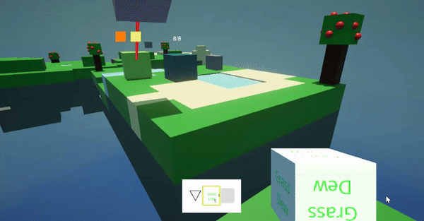
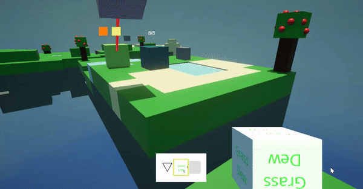
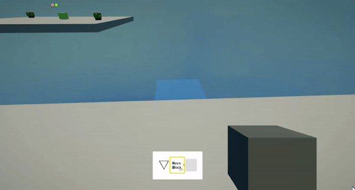
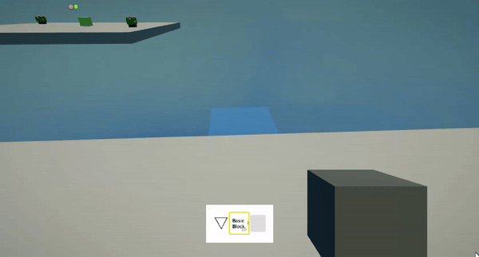
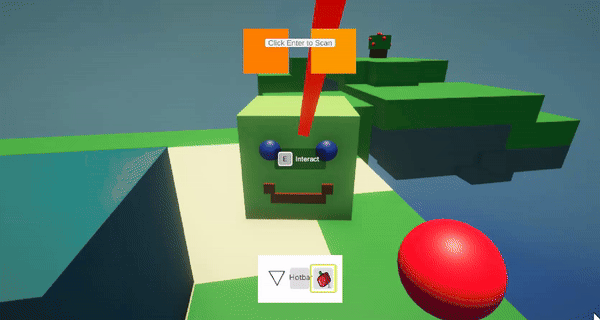
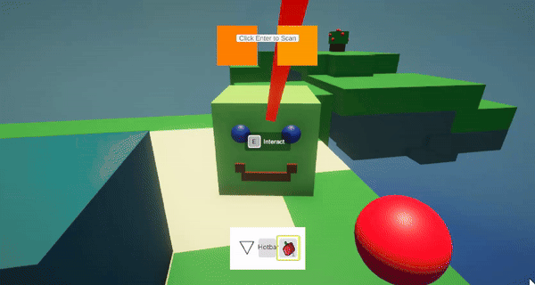

What Is Sky Jellies?
A Unity game made by P1-Open Collective that is about taking care of Jellies, and impacting the world positively around you. The project has been in development for over a year, and has been worked on by many volunteers.
What I Did
Item Tossing


I programmed the ability for the player to drag items out of their inventory in order to free up space.
Player Rigidbody
 

I reprogrammed the player movement to use a rigidbody instead of using a character controller.
Item Holding
I added a hotbar to the player so that players could hold out items to interact with the world. Pressing the 1,2, and 3 keys allows the user to swap between items, and the model and textures change automatically based on the prefab of the item.
Simple Block Placement
 

I programmed the ability for players to place whitelisted items in a grid, in a small area infront of them.
Item Interaction
 

Instead of opening a menu on the HUD, the player can now directly interact with the Jellies. They can feed them by holding food in their hotbar and pressing interact, or pet them by having nothing in their hand and pressing interact.